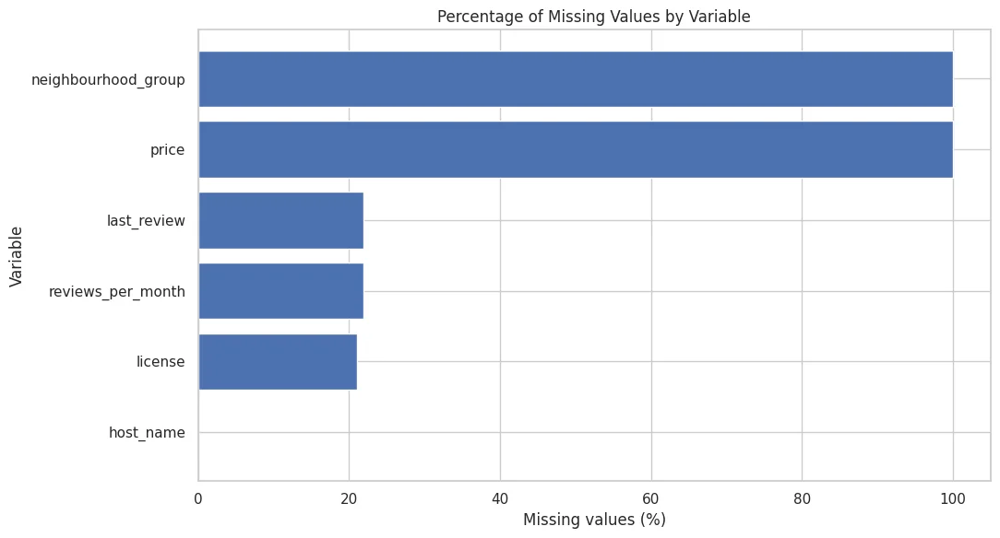
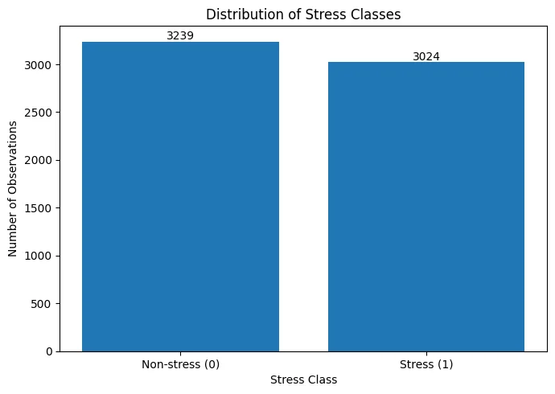
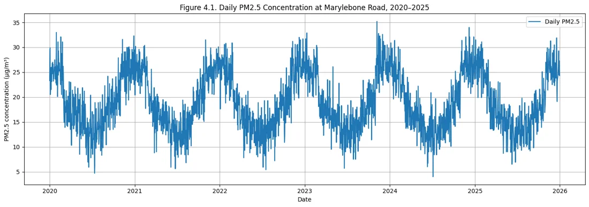
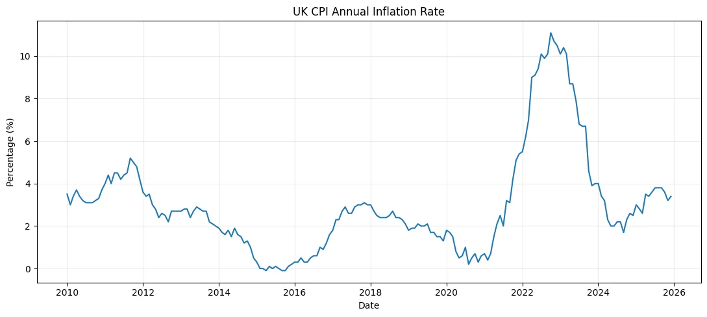
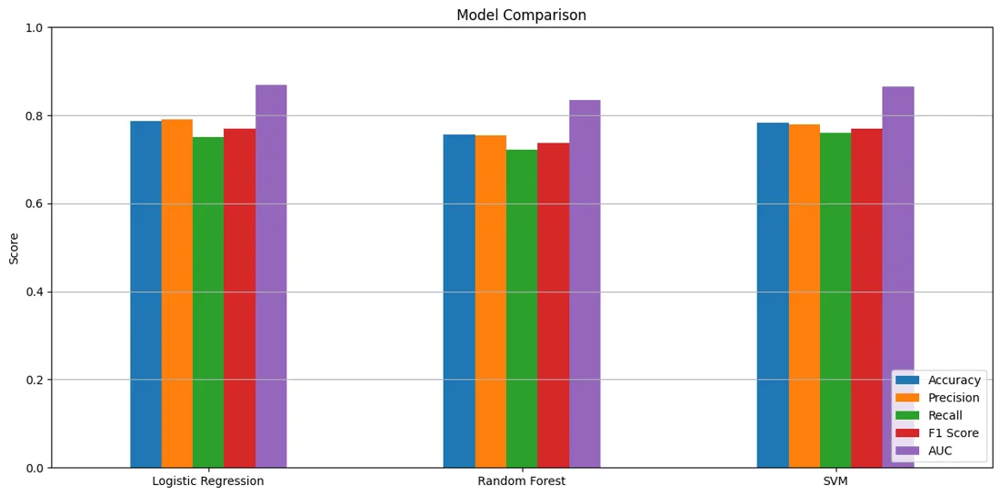
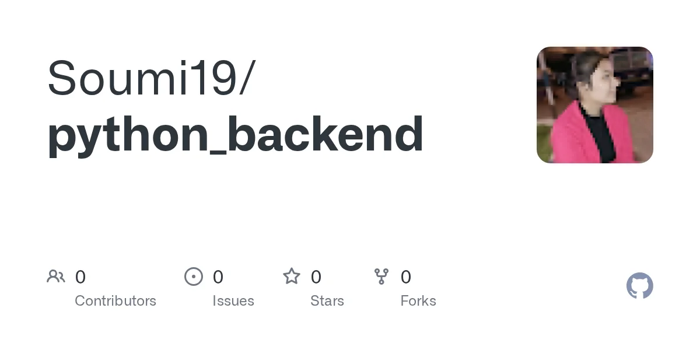
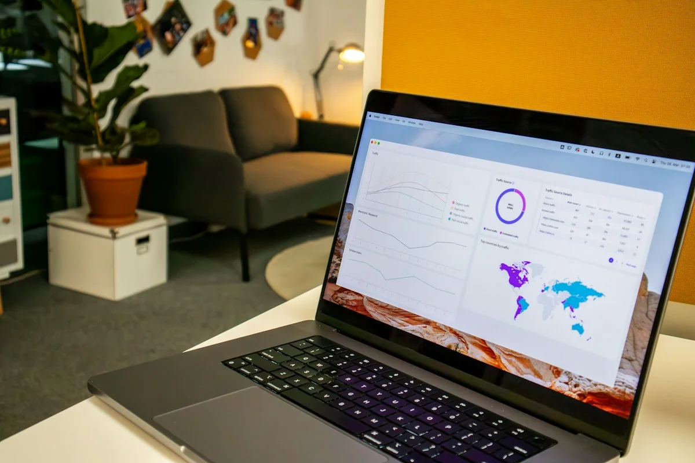
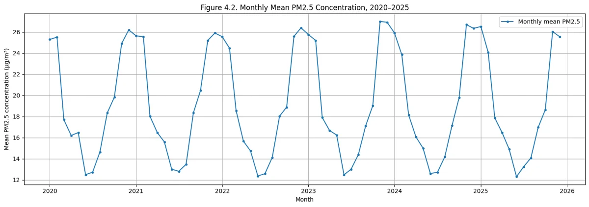

Projects & public repositories.
17 projects match your selection.
portfolio
Explore the source code and project documentation on GitHub.
HTML
View repository →mahesh ganguly portfolio
Explore the source code, documentation and project files in this public repository.

AIRBNB REVIEW ACTIVITY
Explore the source code, documentation and project files in this public repository.

Physiological Signals from Wearable Devices
Explore the source code, documentation and project files in this public repository.
Cardiovascular Risk Using Wearable Device Data
Explore the source code, documentation and project files in this public repository.

Time Series Analysis of PM2.5 Levels in London
Explore the source code, documentation and project files in this public repository.

A Comparative Analysis of ARIMA and Random Forest Models
Explore the source code, documentation and project files in this public repository.

Detection of Fake News Using Hybrid NLP and ML
Explore the source code, documentation and project files in this public repository.
Speed Deteection
Explore the source code, documentation and project files in this public repository.

python backend
Explore the source code, documentation and project files in this public repository.
Applied projects.
Tools and scope drawn
from my supplied CV.
Real-Time Object Detection
Object recognition and tracking in dynamic environments, combining detection models with real-time processing.
Explore projectAI-Driven Cheat Detection
Classification experiments using Random Forest and support vector machines to identify behavioural patterns.
Explore projectRainfall Trend Analysis
Seasonal time-series analysis and visualisation of historical rainfall patterns.
Explore projectNetwork Anomaly Detection
Anomaly detection and clustering applied to network traffic patterns.
Explore project
Sales Performance Dashboard
Interactive business KPI dashboards with filtering, trends and drill-through analysis.
Explore projectVirtual Learning Environment
An online learning application developed at UR Technology and Computers with responsive interfaces and server-side functionality.
Explore project
PM2.5 Air Quality Forecasting
Time-series modelling with AIC/BIC model selection and rolling-origin validation for daily air-quality data.
Explore project